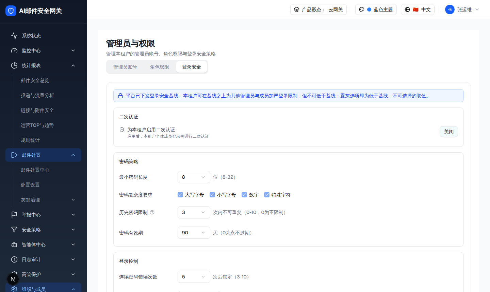
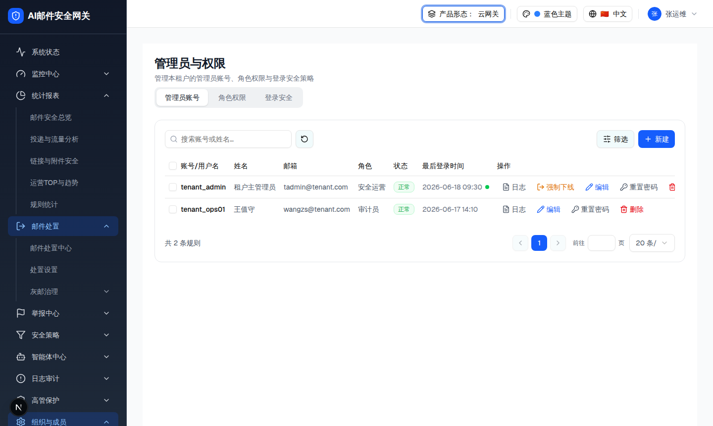
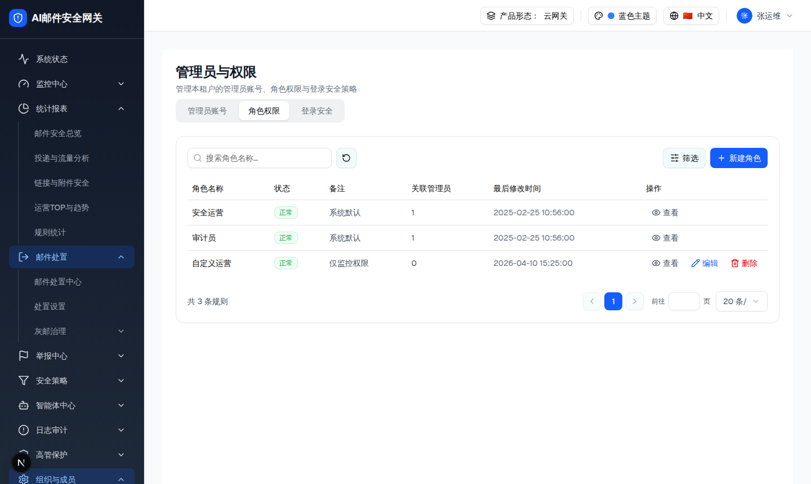

| 属性 | 规格 | 形态/角色差异 |
|---|---|---|
| 所属组件 | 2.5 租户视角差异（跨 UserPermissionPage 三 Tab） | [Overlay] 租户层覆盖基础层 |
| 主文件 | admin-users/index.html | [Base] — |
| 触发路径 | 产品形态切换器选择多租户形态 + 角色选择「租户管理员」；URL query 本身不是 demo 的状态源 | [单租户] 无此角色；[多租户] 可切换 |
| 作用域 | scope="tenant" → 数据/角色/模块按租户裁剪；登录安全受平台基线约束 | [租户管理员] 当前 tenantId |

| 元素 | 租户视角行为 | 形态/角色差异 |
|---|---|---|
| 基线 banner | 蓝色提示：可加严不可低于基线；置灰即低于基线不可选 | [Overlay] 仅租户管理员 |
| 二次认证 | 可自主「启用/关闭」→ Toast「已为本租户启用/已关闭本租户二次认证」；平台强制时显示「已强制启用」锁定 | [Overlay] 仅租户管理员 |
| 复杂度/数值项 | 基线要求开启的布尔项锁定为开；低于基线严格度的下拉取值 disabled；保存校验「不得低于平台下发的安全基线」 | [Overlay] 平台管理员不受此限制 |
| 底部按钮 | 「重置为平台基线」（而非「重置为默认」） | [Overlay] 租户专属文案 |
| 比对项 | demo 实际 DOM | 提取的 HTML | 是否一致 |
|---|---|---|---|
| 基线 banner | 租户视角 hasBanner=true，.bg-blue-50 | 同 | 一致 |
| 二次认证分组 | 租户视角 has2FA=true，SectionCard「二次认证」，按钮「关闭」（当前启用） | 同 | 一致 |
| 分组数 | 5（二次认证 + 密码策略 + 登录控制 + IP访问控制 + 单点登录限制） | 示意 2 组（二次认证 + 密码策略），完整见截图 | 精简：截图为全 5 组 |
| 复杂度锁定 | 基线为 true 时 checkbox disabled | 同（disabled） | 一致 |
| 重置按钮文案 | 「重置为平台基线」 | 同 | 一致 |


| Tab | 租户视角差异 | 形态/角色差异 |
|---|---|---|
| 管理员账号 | 仅本租户管理员（adminScope=tenant && tenantId=当前租户，2 人）；新建/编辑角色选项剔除「系统管理员」；创建者均为租户管理员 | [多租户租户管理员] |
| 角色权限 | 租户角色（安全运营/审计员/自定义运营）；自定义运营 非系统默认 → 有「编辑/删除」；模块矩阵剔除系统管理，含安全策略/智能体/高管保护（租户专属） | [多租户租户管理员] |
| 副标题 | 「管理本租户的管理员账号、角色权限与登录安全策略」 | [Overlay] tenant 文案 |
| 比对项 | demo 实际 DOM | 提取的 HTML | 是否一致 |
|---|---|---|---|
| 租户管理员行 | 2 行（tenant_admin / tenant_ops01） | 截图一致 | 一致 |
| 租户角色行 | 3 行；自定义运营 行动作含 查看/编辑/删除 | 截图一致 | 一致 |
| 副标题 | 「管理本租户的…」 | 浏览器提取一致 | 一致 |